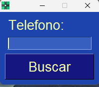
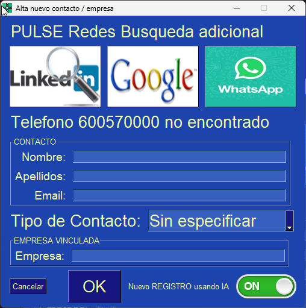
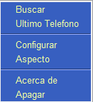

Introducción:
La integración la aplicación CRM-Holded le aporta mayores beneficios en sus comunicaciones porque le permite mejorar la gestión de tiempo y de los recursos. Esta integración de la centralita destaca por la marcación de un solo clic al lanzar las llamadas, registro automático con la información detallada de las llamadas y mucho más, que garantiza que tenga todos los datos de los clientes a mano y sea más efectiva las comunicaciones. Apertura automática de la ficha de Holded con contenga el numero entrante o saliente.
Consulta de la base de datos de empresa y relleno de datos comerciales de forma rápida y sencilla [^1].
[^1] solo datos empresas españolas
Requisitos del sistema:
Sistema Windows compatible:
- Windows 10 o superior con Espacio mínimo 5 Mb
Enlace Movil Android (opcional)
- Llamadas entrantes y saliente automáticas
- App Android instalada y conectada App-Call-remoto
Usuario Clave Api
- Obtener credenciales api-holded
Instalación Centralita
Pasos para instalacion Centralita Holded
Interfaz de usuario
- Si el proceso se realiza correctamente en la parte Derecha aparece el siguiente Icono.
Botón Izquierdo sobre el icono.
- Pulsado sobre icono con botón del ratón Izquierdo

- Si el teléfono no se encuentra se abrir de forma automática la pantalla:

Documentacion para creacion nuevos Registros en Holded
Botón derecho sobre icono

Buscar
Mismo resultado que pantalla anterior pulsando botón Izquierdo
Ultimo Teléfono
Usa el ultimo teléfono introducido manualmente capturado con la aplicación App-Call-remoto
Configuración Centralita
Menu Pantalla configuracion centralita holded.
Parámetro de uso de la Herramienta:
- Idiomas disponibles
- Registro API activa en Holded
- Auto cierre Alta registro por falta de actividad
- Uso de APP enlace Móvil Android automatización llamadas. App-Call-remoto
{kind=link}
Aspecto.
Cambie los colores de la centralita. Dispone de casi 50 opciones para ello.
Integraciones terminales android
De forma automática la llamada entrantes o salientes verifica en CRM-Holded el registro. Uso de la aplicación de terceros App-Call-remoto
Solución de problemas
En la siguiente WEB Soporte Nivel2
Conclusiones
Con una pequeña inversión tendrá una funcionalidad que aumentar su productividad para crear y localizar contacto de forma automática y crear con todo los datos posibles usando IA.
Ventajas
- No necesita cambiar de operador telefonico
- Mecaniza la entrada y localizacion de fichas que contega el numero de telefono.
Desventajas
- Solo compatible con Android [[App-Call-remoto]]